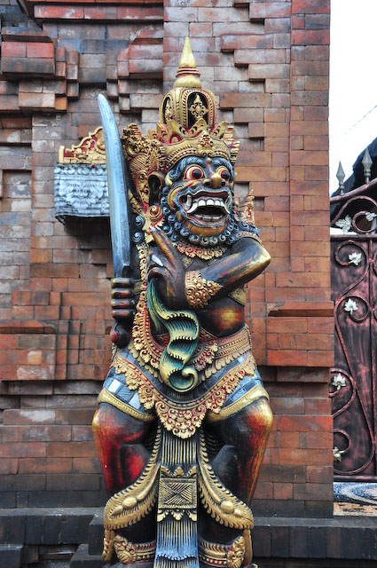
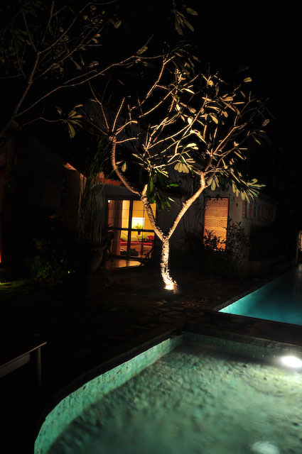
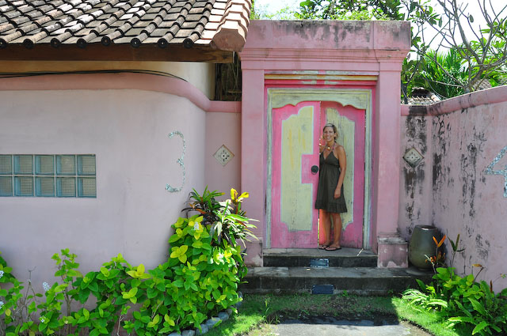
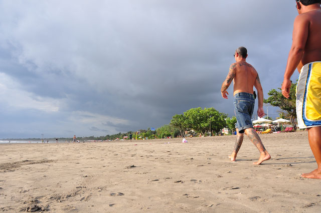

Mitten in der Nacht sind wir endlich in Bali angekommen. Trotz später Stunde stand jemand von unserem Hotel, der "Villa Kresna" in Seminyak, bereit. In keiner halben Stunde konnten wir unsere "Kawi Suite" beziehen. Für den Start haben wir uns eine echt luxuriöse Bleibe gesucht: Eigene kleine Terrasse, Bad im Freien, gigantisches Bett und eine extra Etage mit einem winzigen Tischlein zum Tagebuchschreiben. Der einen oder anderen dürfte das bekannt vor kommen :)
 Nachdem wir endlich mal ausschlafen konnten, haben wir das Frühstück auf unserer Terrasse eingenommen und anschließend den Strand in Augenschein genommen. Wie Holland - nur in heiß. Allerdings nicht so heiß wie Taipeh, die ersehnte Abkühlung! Wir haben auch direkt etwas Regen abbekommen. Aber später war noch genug Sonne für den ersten Brand übrig.
 